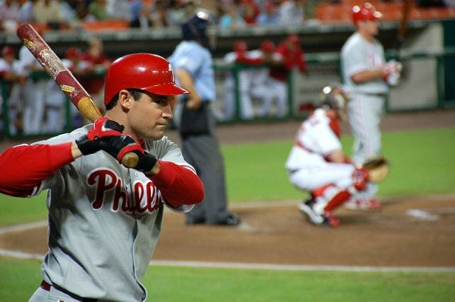
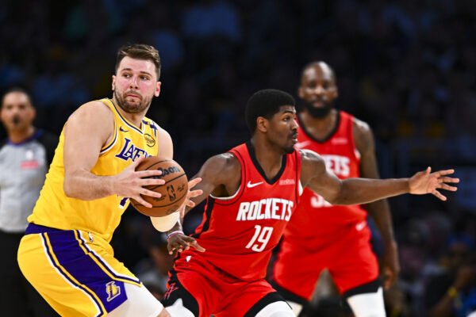
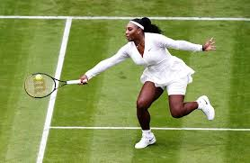
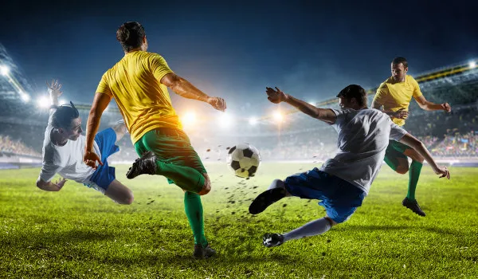

| Esportes | Origem | Ambiente | Objetivo | Equipe | 1  | Basebol | EUA,1971 | Campo com 1/4 de circulo, de 92 a 108,2m de raio | Realizar o maior numero de corridas | Nove Jogadores em cada time | 2  | Basket | EUA,1881 | O jogo é realizado em ginasios que possui quadra de tem 94 pés (28,65 metros) de comprimento por 50 pés (15,24 metros) de largura | Maracar o maior numero de pontos | 5 Jogadores em cada time | 3  | Tenis | EUA,1981 | Campo com grandes dimensões | Marcar o mais ponto que o adversario | 1 jogado de cada lado | 4  | Futebol | Inglaterra,1863 | O ambiente mais comum, geralmente em estádios, com grandes dimensões. | Marcar mais gols | 11 Jogadores em cada time |
|---|